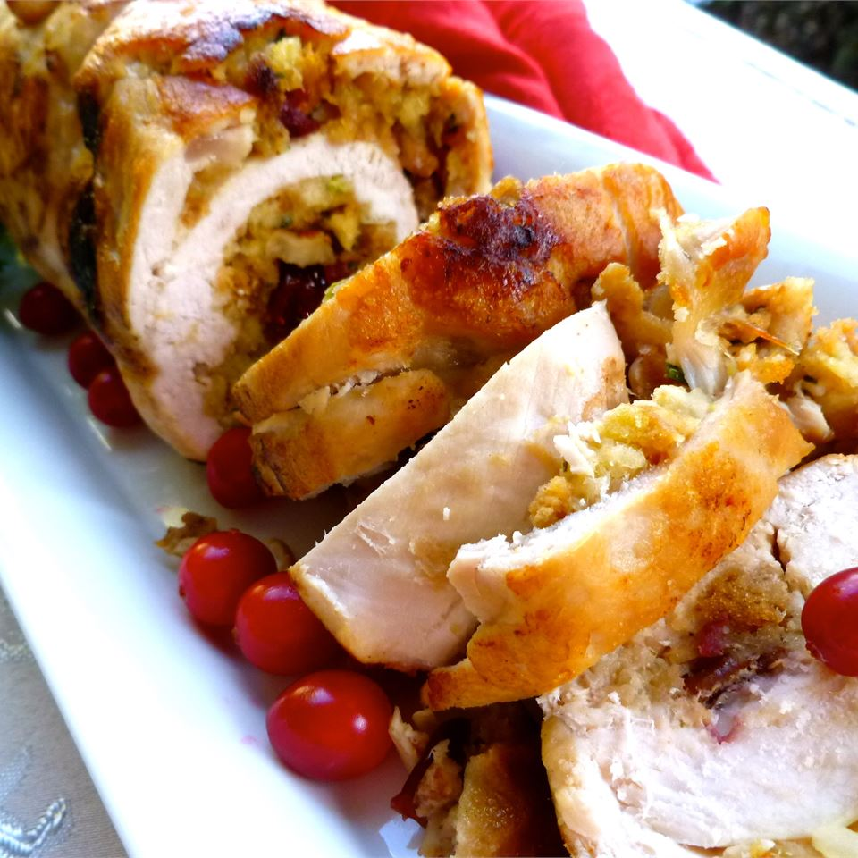

Cranbery Stuffed Turkey Breasts

I made these once for a holiday dinner party, and they were such a hit that I started making them for Thanksgiving instead of a whole turkey.
Ingredients
- 1 package herb-seasoned bread stuffing mix
- 2 skinless boneless turkey breasts
- 1 cup chopped pecans
- 2 packages dried, sweetened cranberries
- 2 tablespoons olive oil
- 2 cups cubed cooked turkey
- 6 lettuce leaves
- 1/2 cup pecan halves
Recipe steps
- Preheat the oven to 350 degrees F (175 degrees C). Prepare stuffing mix according to package directions. Set aside to cool.
- With a sharp knife, butterfly breasts open to lay flat. Place each breast between two sheets of waxed paper, and flatten with a mallet. Spread the prepared stuffing to within 1/4 inch of the edge of each breast. Sprinkle each one with chopped pecans and dried cranberries, reserving some of the cranberries for garnish. Roll up tightly in a jellyroll style, starting with the long end. Tuck in ends, and tie in sections with string, about 4 sections around the middle and one running the length of the roll to secure the ends.
- Heat olive oil in a large cast iron skillet over medium-high heat. Carefully brown rolls on all sides.
- Place skillet in oven, uncovered. Bake in a preheated 350 degrees F (175 degrees C) oven for 1 hour, or until the internal temperature is at 170 degrees F (78 degrees C) when taken with a meat thermometer. Do not let these get overly dry.
- Allow rolls to set for 15 minutes before removing string, and slicing into 1/2 to 3/4 inch circles. Leave one roll whole, and slice the other for presentation. Stuffing will be spiraled into meat. Present on your prettiest platter on a bed of curly lettuce, and garnish by sprinkling with the remaining 1/2 cup pecan halves and the reserved dried cranberries.